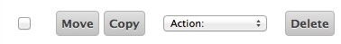

웹클라이언트 태블릿 인터페이스
웹클라이언트 태블릿 인터페이스는 터치스크린을 사용하는 아이패드와 같은 스마트 기기에 최적화되어 있는 웹메일입니다. 안드로이드나 아이폰 등에 있는 사파리나 크롬 등의 웹브라우저를 사용할 때 자동으로 태블릿 인터페이스로 접속됩니다.태블릿 인터페이스는 자바스크립트를 사용하지 않기 때문에 구 버전의 모바일 웹브라우저에서 사용할 수 있지만 IceWarp의 풍부한 모든 기능을 사용하는데는 제약이 있습니다. 모든 기능은 마우스 왼쪽 버튼과 선택 항목을 클릭하는 것만으로도 웹메일을 사용할 수 있습니다. 하지만 문맥 메뉴나 팝업 메뉴는 제공하지 않습니다.
탭

아이콘 툴바는 사용자가 모든 필수 기능들을 손가락으로 편하게 사용할 수 있도록 디자인되었습니다.
- 이메일
- 주소록
- 일정
- 작업
- 메모
- 파일
새 편지를 수신하려면 화면 좌측 상단의 편지봉투 아이콘을 클릭하면 됩니다.

새 편지를 작성하려면 새 연락처를 만들거나 연락처 목록에서 연락처를 선택하여 편지를 작성할 수 있습니다. 새로운 작업이나 온라인 미팅 추청, 파일 업로드 등의 작업을 추가할 수 있습니다.
반복

수평 보기는 좌측 편에 메시지 목록을 표시하고 우측에 본문 내용을 표시해 줍니다. 목록에 폴더를 추가하려면 폴더 관리 옵션을 사용하십시오. 수직 보기는 폴더 목록을 접거나 펼 수 있고 드롭다운 메뉴를 사용할 수 있습니다. 현재 폴더의 이름을 클릭하여 폴더를 사용할 수 있습니다.

폴더 관리 옵션은 아직 목록에 없는 폴더에 대한 단축키를 만들 수 있습니다. 이 단축키를 사용하여 빠르게 접속할 수 있습니다. 또한 기본 폴더를 만들거나 폴더 추가, 삭제, 변경 등도 가능합니다.
손으로 밀기

웹메일에서는 손으로 화면을 미는 기능이 제공됩니다. 이메일 목록, 연락처, 일정 등에서 손가락으로 화면을 밀면 다음 페이지 또는 이전 페이지로 화면을 이동할 수 있습니다:
다음 페이지: 오른쪽에서 왼쪽으로
이전 페이지 : 왼쪽에서 오른쪽으로 (위의 이미지 위에서 처럼)

손가락으로 밀어 사용하는 기능의 대안으로 우측에 페이지 제어 기능을 사용하여 현재 위치를 보거나 전체 페이지 수를 확인할 수 있습니다.

메시지와 연락처, 메모 사이를 밀어보기를 할 수 있습니다. 또한 메시지를 열은 이후에 다음 페이지나 이전 페이지로 이동할 수 있습니다.
빠른 회신

특별한 형식이 필요없거나 설정된 배달 옵션을 사용하려면 빠른 회신을 통해 쉽고 빠르게 원본 메일 송신자에게 회신 메일을 발송할 수 있습니다.
선택

현재 페이지 상에 있는 항목에만 적용
- 페이지 상에 모든 항목을 선택하거나 읽음, 읽지 않음으로 선택을 제한할 수 있습니다
- 없음을 사용하여 선택 해제할 수 있습니다
- 선택된 내용을 모두 끄거나 모두 재선택할 수 있습니다.
또는 개별 체크박스를 사용하여 목록의 개별 항목을 선택할 수 있습니다.
폴더 상에 있는 모든 메시지를 선택하려면 설정 - 일반 메뉴에서 보여질 항목의 수를 늘릴 수 있습니다.
관리
하나 이상의 항목을 선택한 후에 처리 버튼을 눌러 삭제, 이동 등의 행동을 취할 수 있습니다.

처리에서 기타 자주 사용하지 않는 처리방식을 선택할 수 있습니다. 읽음 표시, 블랙리스트 표시 등.
검색

현재 보여지는 모든 데이터에 대하여 검색을 할 수 있습니다. 이메일 제목, 송신자, 수신자, 또는 연락처 등을 키워드를 사용하여 검색할 수 있습니다. 또한 특정 기준을 사용하여 제한적으로 검색이 가능합니다. 예를 들어 subject:홍길동으로 입력하면 제목에서만 홍길동을 검색합니다. 가능한 키워드의 목록은 도움말 끝 부분에서 확인하실 수 있습니다.
검색을 취소하려면 툴바 아이콘 아무 곳이나 폴더를 탭하면 됩니다. 또는 검색 툴바의 내용을 제거하고 검색 버튼을 클릭하여도 취소가 가능합니다.
스팸 방지

폴더 목록에 있는 격리 옵션을 사용하여 화이티리스트나 블랙리스트에 접근할 수 있습니다. 이곳에서 이메일 주소를 확인하여 메일 수신을 거부할 지를 선택할 수 있습니다. 블랙리스트나 화이트리스트에서 이메일 주소를 삭제하거나 이동할 수 있습니다.
스팸을 추가하거나 원치않는 상업 메일을 블랙리스트에 추가하려면 :
- 격리 보관 목록에서 블랙리스트 폴더를 선택하고 새 항목 버튼을 클릭
- 이메일 보기에서 이메일 옆의 체크박스를 선택하고 블랙리스트로 처리 방식을 선택
- 이메일 보기에서 이메일 옆에 체크박스를 선택하고 이동 클릭후 선택
복사/이동 메뉴에서 스팸 폴더로 접속하려면 폴더 관리 옵션에서 즐겨찾기 목록에 스팸편지함을 추가하시면 됩니다.
폴더 관리

즐겨찾기 폴더 목록ㅇ서 폴더 링크를 사용하여 폴더를 관리할 수 있습니다. 중요한 폴더는 폴더 목록에서 쉽게 찾을 수 있도록 되어 있으며 언제든지 복사나 이동이 가능합니다. 또한 폴더에 설명을 추가할 수 있으며 이는 실제 폴더 이름과 달라도 됩니다.

폴더 이름을 클릭하여 폴더를 열어 볼 수 있습니다.

새로운 폴더를 추가하려면 폴더 추가를 눌러 원하는 형태의 폴더를 생성할 수 있습니다. 폴더는 이메일 저장공간이나 연락처 등의 폴더 형태가 있습니다.

폴더 이름 변경은 쉽게 변경이 가능합니다. 만약 좌측 메뉴에서 폴더 링크로 되어 있다면 이 링크는 적용되지 않습니다.

기본 폴더를 만드는 것은 메시지가 저장되거나 전송, 수신되는 곳을 변경하는 것입니다. 기본 폴더는 항상 즐겨찾기 목록에서 접속할 수 있으며 폴더를 삭제하거나 이름을 변경할 수 없습니다.

폴더 삭제는 폴더 자체 및 포함되어 있는 모든 정보를 영구적으로 삭제합니다. 비우기 버튼은 폴더 안에 있는 데이터 만을 삭제합니다.
커스터마이즈

도움말과 로그아웃 아이콘 사이에 있는 설정 버튼은 태블릿 인터페이스를 커스터마이징할 수 있도록 합니다. 다양한 설정은 폴더에서 볼 수 있도록 다양하게 재구성할 수 있습니다.

- 일반- 날짜/시간 형식 변경, 페이지에 보여지는 항목 수, 휴지통, 자동응답, 비밀번호 등
- 편지쓰기- 읽음 확인 요청, 보낸편지함에 보낸편지 저장, 서명, 기본 폰트 등을 설정
- 개인설정- 여러개의 개인설정을 추가/수정/삭제 (메일에 표시될 전체 이름, 이메일 주소 등)
- 자동응답- 각 수신자에게 한번만 회신 등과 같이 자동응답 기능을 설정, 선택한 주소는 절대 자동회신 금지 등
- 전달- 수신 메일을 다른 메일 주소로 전달하거나 복사
취소

편지, 연락처, 일정 등의 편집을 취소하려면 뒤로가기 버튼을 사용하면 됩니다. 수정된 내용은 보관되어 있어 다시 수정이 가능합니다.
전환

데스크탑 인터페이스 또는 모바일 인터페이스 링크를 사용하여 재차 로그인 없이 빠르게 인터페이스 화면으로 전환할 수 있습니다.
대용량 첨부

안드로이드 태블릿에 있는 브라우저에서 첨부파일을 업로드할 수 있습니다. 대용량 첨부 체크박스를 선택하면 서버에 첨부파일이 저장되고 이메일에 다운로드 링크가 삽입되어 발송됩니다. 이는 사용자에게 빠르고 효율적으로 메일을 송수신할 수 있게 합니다.
키워드 검색

모든 키워드가 모든 검색 대상이 되지는 않습니다. subject:는 메일에서만 검색되고 일정관리에서는 title:로 검색하여야 합니다. 여러 개의 키워드를 사용하려면 AND, OR 등의 연산자를 사용하여야 합니다.
from: 송신자만을 선택 (from:Amy)
to: 특정 수신자만을 선택 (to:David)
subject: 제목에서만 키워드 검색 (subject:Dinner)
cc: 참조 항목의 수신자만 검색
bcc: 숨은참조 항목의 수신자만 검색
fulltext: 전체 메시지에서 전체 검색 (fulltext:test)
priority: 우선순위로만 검색, 매우 높음, 일반, 낮음 등 (priority:high)
after: 설정한 시간 이후의 편지만 검색 (after:2004/04/16)
before: 설정한 시간 이전의 편지만 검색 (before:2004/04/16)
title: 타이틀 항목만 검색 (title:Test)
description: 설명이나 메모가 설정된 곳에서만 검색 (description:Test)
name: 연락처 이름이 있는 경우만 검색
email: 이메일 주소로만 검색
keyword: 특정 태그가 있는 경우만 검색 (tag:Business)
tag: 특정 태그를 가진 내용에서만 검색 (tag:Business)
greater: 설정한 메일 크기(KB) 보다 큰 메시지만 검색 (greater:1024)
smaller: 설정한 메일 크기(KB) 보다 작은 메시지만 검색 (smaller:1024)
company: 회사 정보로만 검색 (company:IceWarp)
department: 부서 정보로만 검색 (department:IT)
location: 우치 정보로만 검색 (location:London)